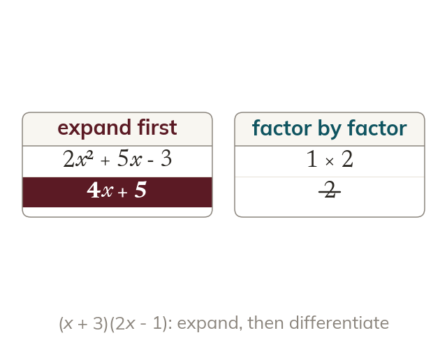

Expand before differentiating
The rule works on single powers of x. So brackets are expanded first.
The rule works on one power of x at a time, so a product of brackets is expanded first. (x + 3)(2x - 1) becomes 2x² + 5x - 3, which then differentiates to 4x + 5.